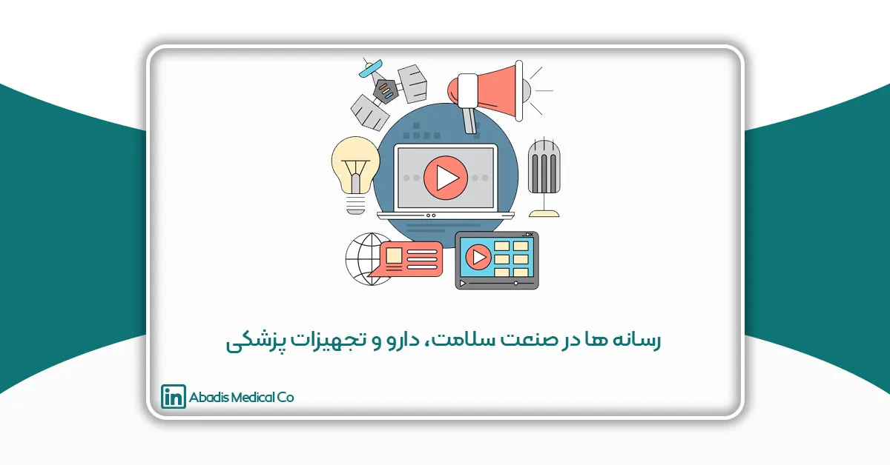

مقدمه
در دنیای امروز، رسانهها نقش حیاتی در تمامی صنایع و همچنین صنعت سلامت، دارو و تجهیزات پزشکی ایفا میکنند. این نقش شامل طیف گستردهای از فعالیتها است که از اطلاعرسانی و آموزش عمومی تا تبلیغات و بازاریابی تخصصی را در بر میگیرد. رسانهها به عنوان پل ارتباطی بین متخصصان سلامت، تولیدکنندگان دارو و تجهیزات پزشکی و عموم مردم عمل میکنند و اطلاعات بهروز و دقیقی را در اختیار مخاطبان قرار میدهند.
تاثیر رسانهها در این صنعت به حدی است که میتوان گفت بدون حضور آنها، ارتباط مؤثری بین اجزای مختلف این اکوسیستم پیچیده برقرار نخواهد شد. از طریق رسانهها، اطلاعات حیاتی مانند معرفی محصولات جدید، نتایج تحقیقات علمی، توصیههای بهداشتی و تغییرات مقرراتی به سرعت به دست مخاطبان میرسد. همچنین، رسانهها بستری برای تبادل نظر و تجربیات میان حرفهایهای این حوزه فراهم میکنند که منجر به ارتقای کیفیت خدمات و محصولات میشود.
رسانههای مختلف از جمله مجلات تخصصی، سایتهای خبری، شبکههای اجتماعی و تلویزیون، هر یک با ویژگیها و مزایای خاص خود، به توسعه و پیشرفت این صنعت کمک میکنند. بررسی نقش و تأثیرات این رسانهها نه تنها به شناخت بهتر از عملکرد آنها منجر میشود، بلکه به تبیین راهکارهای مؤثر برای بهبود ارتباطات و افزایش آگاهی عمومی کمک میکند.
در این مقاله، به معرفی چندین رسانه فعال در صنعت سلامت، دارو و تجهیزات پزشکی ایران خواهیم پرداخت.
شبکه سلامت سیما
شبکه سلامت، یک شبکه تخصصی در حوزه سلامت است؛ که در سال ۱۳۹۱ با پخش آزمایشی فعالیت خود را شروع کرد و سپس به صورت رسمی مطالب و محتوای خود را در ۴ محور «سلامت جسم»، «سلامت روان»، «سلامت اجتماعی» و «سلامت معنوی» به صورت ۲۴ ساعته پخش مینماید. هدف اصلی شبکه ارتقای سلامت جامعه و افزایش آگاهی افراد جامعه در حوزه سلامت است.
مدیریت این شبکه بر عهده دکتر محمدمهدی قاسمی، رئیس شورای سیاستگذاری سلامت سازمان صدا و سیما است.
هفته نامه سلامت
هفته نامه سلامت به شماره مجوز ۷۰۹۴۱ در سال ۱۳۸۲ با صاحب امتیازی موسسه فرهنگی ابن سینای بزرگ و مدیر مسئول امیرعباس فتاحزاده تاسیس شد. این هفته نامه در زمینه پزشکی و پیراپزشکی فعالیت دارد. هفته نامه سلامت پر تیراژترین هفته نامه در ایران است. این هفته نامه هم اخبار سلامت و هم آموزش سلامت را پوشش میدهد.
کانال تلگرام: 1099 عضو
کانال واتساپ: 137 دنبالکننده
اینستاگرام: ۱۴.6 هزار دنبالکننده
رتبه سایت: موجود نیست
ماهنامه مهندسی پزشکی و تجهیزات آزمایشگاهی
ماهنامه مهندسی پزشكی و تجهیزات آزمایشگاهی در سال ۱۳۷۸ با شماره مجوز ۷۴۲۳۰ و با سردبیری آیدین ماکویی فعالیت خود را آغاز نمود. این ماهنامه نخستين و جامع ترین نشريه در حوزه مهندسی پزشکی و تجهیزات پزشكی و آزمایشگاهی است. هدف اصلی ماهنامه اطلاعرسانی جامع در این حوزهها، طرح مسائل صنفی و نشر مقالات علمی است.
گروه هدف این ماهنامه به دلیل محتوایی که هم در بخش صنفی و اجتماعی و هم بخش علمی و بازرگانی دارد به سه گروه اصلی مدیران و کاربران تجهیزات پزشکی و مسئولین فنی، اساتیدو دانشآموختگان و دانشجویان رشتههای مهندسی پزشكی، پزشکی، علوم آزمایشگاهی و تامينكنندگان تجهیزات پزشکی و آزمایشگاهی تقسیم میشوند.
مدير مسئول و صاحب امتياز کنونی ماهنامه مهندسی پزشکی جناب آقای صائب ماكويی و سردبیرش جناب آقای آیدین ماکویی است.
این ماهنامه هم به صورت چاپی و هم به صورت آنلاین در دسترس مخاطبان خود قرار میگیرد.
شاپا چاپی: ISSN 1681-6919
شاپا الکترونیکی: ISSN 1681-6986
اینستاگرام: ۱۴.3 هزار دنبالکننده
رتبه سایت: 12852
توسعه فناوریهای نوین پزشکی
ماهنامه توسعهی فناوریهای نوین پزشکی با شماره مجوز ۸۰۲۴۱ از سال ۱۳۹۶ با هدف ایجاد فضایی نوین در زمینه سلامت ایران و جهان تاسیس شده است. این ماهنامه هم به صورت چاپی و هم به صورت آنلاین منتشر میشود. این ماهنامه در فیدیبو، طاقچه و فرا کتاب نیز منتشر میشود. این ماهنامه در حوزه های علوم پایه و فنی و مهندسی – صنعت تجهیزات پزشکی و دندانپزشکی فعالیت دارد.
صاحب امتیاز و مدیر مسئول این ماهنامه سید آصف مهدوی اردکانی است.
اهداف این ماهنامه عبارتاند از:
- اطلاعرسانی و آگاهیبخشی در حوزهی فناوریهای نوین پزشکی در دنیا
- معرفی دستاوردهای نوآورانهی کشور در عرصهی فناوریهای حوزهی سلامت
- انتقال تجربیات فناوران در زمینهی سلامت
- کمک به برقراری ارتباط میان دستاندرکاران بخش دولتی و فناوران بخش خصوصی
- ایجاد هاب تبادل دانش و تجربیات در حوزهی تنظیمگری و سیاستگذاری فناوری سلامت
- فراهمکردن بستر انتقال دانش و تجربیات صادرکنندگان و تولیدکنندگان فناوریهای سلامت
- معرفی و گفتوگو با همبنیانگذاران استارتاپها، شتابدهندهها و شرکتهای دانشبینان حوزهی سلامت
اینستاگرام: 2483 دنبالکننده
کانال واتساپ: ۶۲۷ عضو
رتبه سایت: 160992
تشخیص آزمایشگاهی
ماهنامه تشخیص آزمایشگاهی در سال ۱۳۷۶ با شماره مجوز ۶۹۵۶۱ و با صاحب امتیازی و مدیر مسئولی عباس افراه فعالیت خود را آغاز نمود. این ماهنامه به صورت چاپی و آنلاین در زمینه های پزشکی و پیراپزشکی منتشر میشود.
این ماهنامه با تيراژ ۱۰۰۰۰ نسخه در ماه به عنوان نخستين و فراگيرترين نشريه در زمينه محصولات آزمايشگاهی است. هدف اصلی این رسانه اطلاع رسانی در حوزه مطالب آزمايشگاهي، تجهيزات و نوآوري های این صنعت است. مخاطبان ماهنامه تشخیص آزمایشگاهی آزمایشگاههای ایران، دانش آموختگان علوم آزمایشگاهی و تامینکنندگان و توزیعکنندگان محصولات این صنعت میباشند.
کانال تلگرام: 420 عضو
اینستاگرام: ۴1۴۰ دنبالکننده
رتبه سایت: 33893
ماهنامه صنعت درمان
ماهنامه صنعت درمان در سال ۱۳۸۹ با مجوز وزارت ارشاد در حوزه مهندسی پزشکی با سردبیری حمید اسلامی فعالیت خود را شروع کرد. این ماهنامه به صورت چاپی با هدف اطلاعرسانی، خبرگزاری و تحلیل و آموزش منتشر میشد. این ماهنامه به عنوان رسانهای مستقل اخبار صنعت سلامت و درمان و تجهیزات پزشکی را پوشش میداد.
متاسفانه این ماهنامه از سال ۱۳۹۹ فعالیت ندارد و منتشر نمیشود.
رتبه سایت: ۱۱۴۰۳۸
دپارتمان مهندسی پزشکی
دپارتمان مهندسی پزشکی وابسته به دانشگاه آزاد واحد علوم تحقیقات در سال ۱۳۹۹، بهعنوان به روزترین وبسایت مهندسی پزشکی کشور، فعالیت خود را در زمینه آموزش، اخبار و مشاوره آغاز کرد. هدف این دپارتمان، برگزاری دورههای آموزشی شامل سمینارها، وبینارها و کارگاههای علمی، و همچنین انتشار اخبار مهم و بهروز در حوزه تجهیزات پزشکی است. این اقدامات با هدف افزایش سطح آگاهی مهندسین پزشکی، هدایت دانشآموختگان به بازار کار و ارائه مشاوره در زمینه تولید، واردات، صادرات و توزیع تجهیزات پزشکی، و ساخت و تجهیز مراکز درمانی صورت میگیرد.
کانال تلگرام: 6510 عضو
اینستاگرام: ۱۳.9 هزار دنبالکننده
رتبه سایت: 63467
آیمد ۹۰
آیمد ۹۰ ، یک رسانه مستقل و متمایز، در صنعت تجهیزات پزشکی توسط سعید اویس و امیر دولتی تاسیس شد. آیمد ۹۰ به صورت متمرکز بر صنعت تجهیزات پزشکی و فعالان این صنعت است. این رسانه سعی دارد تمامی رویدادها، تحولات و مشکلات این صنعت را مورد بررسی و تجزیه و تحلیل قرار دهد و با تصمیمگیریهای متخصصین مسیر این صنعت را برای فعالین این صنعت هموار سازد. پایگاه خبری آیمد ۹۰ تلاش میکند بتواند بهعنوان مرجعی کاملا تخصصی در صنعت تجهیزات پزشکی باشد.
این رسانه یک رسانه مستقل، تخصصی و گفتگو محور با هدف شفاف سازی، پاسخگویی و تحلیل رویدادهای عرصه تجهیزات پزشکی است؛ که در تلگرام و اینستاگرام نیز فعالیت دارد.
کانال تلگرام: 1144 عضو
اینستاگرام: 668 دنبالکننده
رتبه سایت: موجود نیست
دوشنبههای دارویی
دوشنبههای دارویی، یک مجموعه مستقل، متمایز و گفتگو محور زیر مجموعه آیمد ۹۰ است که در سال ۱۴۰۰ توسط سعید اویس و امیر دولتی راه اندازی شد. دوشنبههای دارویی فعالیت خود را در کلاب هاوس آغاز نمود. این گفتگوها در کلاب هاوس در روزهای دوشنبه ساعت ۲۱ با حضور متخصصین صنعت سلامت و دارو برگزار میشد و موضوعاتی از قبیل مشکلات و معضلات تولید دارو، واردات دارو و مکملها، توزیع دارو و سایر موضوعات بحث برانگیز این صنعت را مورد بررسی و تحلیل قرار میداد.
از آبان ۱۴۰۱ بعد از برگزاری ۱۰۰ برنامه در کلاب هاوس، برگزاری نشستهای حضوری به برنامه دوشنبههای دارویی اضافه گردید. این نشستهای حضوری به صورت فصلی برگزار میشود.
صاجب امتیاز این پایگاه خبری میثم دولتی ابربکوه و مدیر مسئول آن شادی کلاه دوزان است که در سال ۱۴۰۲ مجوز این پایگاه خبری به شماره ۹۴۱۴۰ صادر شد.
این پایگاه خبری، اخبار، تحلیل ها، بررسی چالشهای صنعت دارو، سلامت و تجهیزات پزشکی کشور را پوشش میدهد.
کنفرانس پایان سال دارو که یکی از نشستهای دوشنبههای دارویی بود؛ با موضوع “بررسی حکمرانی دارو و ملاحظات سرمایه گذاری” در ۳ اسفند سال ۱۴۰۲ با حضور چهرههای سرشناس این صنعت با حمایت و همراهی تشکلهای صنعت در دانشکده داروسازی دانشگاه علوم پزشکی تهران برگزار شد. فعالان صنعت دارو و صاحب نظران این صنعت، در این کنفرانس به بررسی فراز و فرودهای سرمایه گذاری در صنعت دارو و سلامت، بحران نقدینگی و راه حل برای تامین نقدینگی و گذر از بحران مالی پرداختند. در این کنفرانس از محمود نجفی عرب رئیس اتاق بازرگانی تهران، ابراهیم هاشمی، علی منتصری، فاطمه اطیابی و نغمه نصر تقدیر شد.
کانال تلگرام: 3662 عضو
اینستاگرام: 2969 دنبالکننده
کانال واتساپ: ۶۸۰ عضو
رتبه سایت:25074
مهندسی بیمارستان
ماهنامه مهندسی بیمارستان با مجوز رسمی وزارت ارشاد به شماره ۸۱۵۸۱ در سال ۱۳۹۶ فعالیت خود را در زمینه حوزه علوم پایه و فنی و مهندسی – صنعت تجهیزات پزشکی و دندانپزشکی آغاز نمود. مدیر مسئول و صاحب امتیاز این ماهنامه یحیی رضوی است. این ماهنامه بستری جستجو محور برای انتشار مؤثر محتوای مطبوعات بر اساس شمارگان در فضای مجازی را فراهم میکند. از اینرو مخاطبان این ماهنامه می توانند مطالب و مقالات مورد نظر خود را از طریق جستجو در محتوای مطبوعات پیدا کنند. هدف مگ لند تبدیل شدن به مرجعی هوشمند در مطبوعات کشور است.
رتبه سایت: 10095
مهندسی پزشکی زیستی
نشریه علمی مهندسی پزشکی زیستی، فصلنامهای معتبر با شماره مجوز ۱۷۹۷۳ در سال ۱۳۸۳ توسط انجمن مهندسی پزشکی ایران و به مدیر مسئولی سیدمحمدرضا گلپایگانی شروع به فعالیت کرد. سردبیر کنونی این فصلنامه ناصر فتورائی است.
این نشریه علمی معتبرترین نشریه در زمینه مهندسی زیست پزشکی ایران است و هیئت تحریریهی آن از اساتید برجسته دانشگاههای کشور تشکیل شده که آثار با ارزش علمی را انتشار میکنند.
پذیرش و انتشار مقالات در این نشریه به صورت آنلاین و با الگوی استاندارد در وبسایت رسمی و تخصصی خود انجام میپذیرد. این مقالات در رشتههای مرتبط با مهندسی پزشکی و گرایشهای بیوالکتریک، بیومکانیک، بیومتریال و بالینی متنشر میشوند.
شاپا چاپی: 5869-2008
شاپا الکترونیکی: 9685-8006
رتبه سایت: 41801
فصلنامه بیمارستان
مجله بیمارستان به شماره مجوز ۶۸۸۳۷ توسط انجمن علمی اداره امور بیمارستانها در سال ۱۳۷۷ به مدیریت دکتر حجت رحمانی تاسیس شد. این نشریه با همکاری دانشگاه علوم پزشکی تهران تازهترین مقالات علمی پژوهشی در زمینه سلامت منتشر میکند. سردبیر این نشریه دکتر عرب است.
مقالات این نشریه در زمینههای مدیریت و اقتصاد نظام سلامت از جمله تحقیقات مربوط به تعالی خدمات بالینی، خدمات پرستاری، تأمین تسهیلات و تأسیسات بیمارستانی و تجهیزات پزشکی، امور غذا و دارو و نظامهای بیمهای و شیوههای پرداخت، ایمنی بیماران به ویژه در حوزه بیمارستان مقالات علمی پژوهشی منتشر میشود.
شاپای چاپی: ۱۹۲۸-۲۰۰۸
شاپای الکترونیکی: ۷۴۵۰-۲۲۲۸
رتبه سایت: موجود نیست
صنایع پزشکی
سهیل رحمانی کارشناس ارشد مهندسی پزشکی، فعالیت خود را در پیج اینستاگرام (42600 دنبالکننده) از سال ۱۳۹۸ آغاز نمود. وی ابتدا به مطالب آموزشی در صنعت تجهیزات پزشکی پرداخت و سپس فعالیت خود را درباره صنعت تجهیزات پزشکی پیش برد. سهیل رحمانی مدیر مسئول و صاحب امتیاز پایگاه خبری صنایع پزشکی است. مخاطبان این صفحه دانشجویان، علاقهمندان و فعالین صنعت تجهیزات پزشکی هستند.
اینستاگرام: ۴۲8۰۰ دنبالکننده
گروه تمپا و مجتبی خشامی
مجتبی خشامی علاقهمند و فعال در صنعت تجهیزات پزشکی است که فعالیت خود را از پیج اینستاگرامی خود آغاز کرد. او فعالیت خود را در پیج اینستاگرام و کانال تلگرامی مهندسی پزشکی تمپا را از سال ۱۳۹۴ شروع کرد. اکنون پیج اینستاگرام گروه تمپا ۲۷.۶ هزار نفر دنبالکننده و کانال تلگرامی آن ۵۹۴۴ عضو دارد.
در اردیبهشت ماه سال ۱۴۰۳ گروه مهندسی پزشکی تمپا، تداکس مهندسی پزشکی را در کارخانه نوآوری آزادی با حضور میهمانان گرانقدر این صنعت برگزار کرد.
اینستاگرام مجتبی خشامی: ۵5۶۶ دنبالکننده
اینستاگرام گروه تمپا: ۲9.7 هزار نفر دنبالکننده
کانال تلگرام گروه تمپا: ۵۹83 عضو
پایگاه خبری مهندسی پزشکی
پایگاه خبری مهندسی پزشکی ایران(موپنا) یک رسانه رسمی در حوزه مهندس پزشکی و صنعت تجهیزات پزشکی است و فعالیت خود را از سال ۱۴۰۰ آغاز نموده است. هدف این رسانه افزایش سطح آگاهی در صنعت تجهیزات پزشکی است، و از این رو به روزترین اخبار و مقالات اختصاصی در این صنعت را انتشار میدهد.
رتبه سایت: 234720
فانا-پایگاه خبری تحلیلی دارو و سلامت
فانا یک پایگاه خبری آنلاین برخط رسمی در حوزههای دارو، تجهیزات و ملزومات پزشکی، مکمل و گیاهان دارویی، آرایشی و بهداشتی، خدمات سلامت و غذا و کشاورزی است. این پایگاه خبری در سال ۱۳۹۹ با شماره مجوز ۸۷۰۵۵ و صاحب امتیازی و مدیر مسئولی سید سجاد حسینی تاسیس گردید. سردبیر این رسانه جواد بهآبادی است. این پایگاه خبری در تلگرام و اینستاگرام و X(توییتر) نیز فعالیت دارد.
اینستاگرام: 8454 دنبالکننده
کانال تلگرام: 16488 عضو
X(توییتر): ۱۸69 دنبالکننده
رتبه سایت: 3435
درمانا
درمانا که زیر مجموعه پایگاه خبری فانا و دارو و سلامت است؛ فعالیت خود را از اسفند ۱۴۰۲ به صورت آزمایشی با هدف کمک به جامعیت اخبار تجهیزات و ملزومات پزشکی، افزایش آگاهی مردم با تجهیزات و ملزومات پزشکی و ارتقای جایگاه تجهیزات و ملزومات پزشکی در بین مسوولان و سیاستگذاران، با سردبیری جواد بهآبادی آغاز نمود. این پایگاه خبری اخبار حوزههای تجهیزات پزشکی، تجهیزات آزمایشگاهی، تجهیزات دندانپزشکی، تجهیزات بیمارستانی و رویدادها و تشکل ها و چهرههای تاثیرگذار این صنعت را پوشش میدهد و تحلیل میکند. این پایگاه خبری در تلگرام، اینستاگرام نیز فعالیت دارد.
کانال تلگرام: 2235 عضو
اینستاگرام: 104 دنبالکننده
رتبه سایت: 66014
غذا و دارو
ماهنامه غذا و دارو یک نشریه چاپی است که در حوزه پزشکی و پیراپزشکی فعالیت دارد. این نشریه در سال ۱۳۹۳ با شماره مجوز ۷۳۳۷۳ و با صاحب امتیازی موسسه رساگفتمان صنعت بینش و مدیر مسئولی لیلا ماله میر چگینی فعالیت خود را آغاز نمود. این نشریه به نشر اخبار و توسعه اطلاعات در میان مخاطبان صنعت دارو میپردازد. ماهنامه غذا و دارو در کنار مجله چاپی خود در سایت و فضای مجازی فعالیت دارد.
اینستاگرام: 4459 دنبالکننده
سالم خبر
پایگاه خبری سالم خبر بهعنوان یک تریبون برای رساندن صدا و پیام بخش خصوصی در حوزهی سلامت، دارو و غذا در سال ۱۳۹۶ با شماره مجوز 80548 شروع به فعالیت کرد. این رسانه به روزترین اخبار، تحلیلها و گزارشها از موضوعات و اتفاقات حوزه سلامت و دارو را بطور آنلاین و روزانه در اختیار مخاطبان خود قرار دهد. صاحب امتیاز و مدیر مسئول این رسانه معصومه شهریاری کشه است.
کانال تلگرام: 7847 عضو
اینستاگرام: ۱۰79
رتبه سایت: 18046
دنیای سلامت و دارو
رسانه غیر رسمی دنیای سلامت و دارو سایت، کانال تلگرامی(با ۱۰۰۹۲ عضو) و صفحه اینستاگرامی (با ۱۳۵۰۰ دنبال کننده) فعال در صنعت دارو و غذا است که کار خود را در سال ۱۴۰۰ آغاز کرده است. هدف این رسانه خدمت به زندگی سالم مردم است.
کانال تلگرام: 10611 عضو
اینستاگرام: ۱۳۵۰۰ دنبالکننده
رتبه سایت: موجود نیست
ساعت سلامت
رسانه ساعت سلامت به شماره مجوز ۹۱۵۰۷ و صاحب امتیاز و مدیر مسئولی افشین شاعری در سال ۱۴۰۰ فعالیت خود را آغاز نمود. این رسانه آنلاین یک مرجع معتبر اخبار و معرفی مراکز خدمات سلامت است. هدف این رسانه کمک به ارتقای سواد سلامت جامعه است.
کانال تلگرام: ۴86 عضو
اینستاگرام: 98 دنبالکننده
کانال واتساپ: ۹29 عضو
رتبه سایت: 18981
دارو و درمان
دارو و درمان قدیمیترین ماهنامه سلامت کشور بود. این ماهنامه با مجوز رسمی وزارت ارشاد از سال ۱۳۶۵ آغاز به کار کرد. صاحب امتیاز این نشریه شرکت سهامی داروپخش و مدیر مسئول آن مرتضی آذرنوش بود. انتشار این ماهنامه متاسفانه به صورت چاپی و آنلاین متوقف شده است و در حال حاضر فقط در اینستاگرام فعالیت دارد.
اینستاگرام: ۳۷۵۵ دنبالکننده
نوین دارو
نوین دارو یک ماهنامه چاپی است که در سال ۱۳۸۳ با شماره مجوز ۱۷۸۴۸ و صاحب امتیازی آمنه صفری گیری و مدیر مسئولی احمدرضا همتی مقدم داورزن در زمینه پزشکی داروئی ، پیراپزشکی، سلامت دارو درمان تاسیس شد. این ماهنامه هم به صورت چاپی و هم آنلاین منتشر میشود. مخاطبین این ماهنامه پزشکان و متخصصان، بیمارستانها، کلینیکها، مراکز زیبائی و پوست، داروخانه ها وفعالان حوزه تغذیه و بهداشت و سلامت است.
اینستاگرام: ۴۴58 دنبالکننده
رتبه سایت: موجود نیست
ریان
پایگاه خبری الکترونیک ریان به شماره مجوز ۷۷۰۰۸ در سال ۱۳۹۴ توسط میلاد زارعی ولی آباد تاسیس شد. صاحب امتیاز و مدیر مسئول این رسانه نیز، میلاد زارعی ولی آباد میباشد. این پایگاه خبری در حوزههای سلامت و بهداشت، صنعت و معدن و استارتاپ و فناوری اطلاعات به ویژه صنعت پزشکی فعالیت میکند. کانال تلگرامی ریان به عنوان یک پایگاه خبری به روز دارای ۱۱۱ عضو است.
کانال تلگرام: 44 عضو
اینستاگرام: 414 دنبالکننده
کانال واتساپ: 350 عضو
رتبه سایت: 81024
آبسلانگ
آبسلانگ با مدیریت و سردبیری محمد درآبادی که در تاریخ ۱۲ اسفند ۱۴۰۲ در کانال تلگرام فعالیت خود را آغاز نمود. آبسلانگ یک رسانه تحلیلی خبری در حوزه تجهیزات پزشکی در قالب طنز میباشد. تولید محتوای این رسانه بیشتر به صورت پادکست و ویدیو است.
آبسلانگ به هیچ نهاد و شخصی وابسته نیست؛ و محصولی از موسسه محاکات ایرانیان است و در این تحریریه امید است پیوسته با شفاف سازی در حوزه تجهیزات پزشکی مشکلات و موانع رفع گردد.
کانال تلگرام: 209 عضو
سلامت رسانه
«سلامترسانه» یک پایگاه خبری تحلیلی مستقل در حوزه سلامت، دارو، تجهیزات پزشکی، و سلامت اجتماعی است؛ این رسانه در تاریخ 17 دی 1403 تاسیس شده و دارای شماره مجوز 96941 از وزارت فرهنگ و ارشاد اسلامی است.
همچنین صاحب امتیاز و مدیر مسئول این رسانه جناب آقای محمدرضا جنیدی فرد می باشد.
سلامت رسانه با پوشش دستهبندیهای متنوع مانند اخبار فوری، یادداشت، عکس، فیلم و بررسیهای دقیق، تلاش میکند ضمن ارائه خبرهای موثق، عمق تحلیل و مطالعات را نیز به مخاطب منتقل کند.
ویژگیها و مأموریت
پوشش گسترده موضوعی:
شامل بحرانها (مانند جنگ و خشونت علیه مراکز درمانی)، تحولات علمی (مثلاً حذف کامل سرخک و سرخجه، رادیوداروها)، و چالشهای عمومی (آلودگی هوا، زئونوزها، تأمین دارو و ارز)
تمرکز بر سلامت اجتماعی و رفاه عمومی:
انتشار مطالب درباره بحرانهای سلامت عمومی و ساختارهای کلان مدیریت بحران.
تولید محتوای چندرسانهای:
ارائه گزارش تصویری، اینفوگرافی، یادداشت، فیلم یا مصاحبه با شخصیتهای حوزه سلامت، که نشاندهنده تنوع فرمتهای خبری آن است.
خطمشی شفاف و استقلال تحریری:
تاکید بر حفظ اعتبار منابع خبری و استقلال از نهادهای دولتی؛ و اجازه بازنشر با ذکر اصل نام رسانه.
نقش در ارتقای سلامت رسانهای
• ارائه اخباری که مستقیماً بر سلامت عمومی تأثیر دارد (مثل هشدارها درباره گردوغبار، قاچاق تجهیزات پزشکی، نسل اندازی بیماریها).
• تحلیل پیامدهای اجتماعی و سیاسی، مانند نقش مراکز درمانی در بحرانها، مدیریت ارزی، و تعامل با سازمان غذا و دارو.
این رسانه، از طریق پوشش دقیق، تحلیلی و چندرسانهای، به مخاطبان کمک میکند تا نهتنها اطلاعرسانی دریافت کنند بلکه تحلیل درست از شرایط سلامتمحور داشته باشند.
حضور در شبکههای اجتماعی
سلامترسانه برای گسترش دسترسی و تعامل با مخاطبان، فعالیت خود را در پیامرسانها و پلتفرمهای اجتماعی آغاز کرده است. این رسانه از ۱۴ اردیبهشت ۱۴۰۴، فعالیت رسمی خود را در تلگرام و واتساپ شروع کرد و بهمرور دامنه حضور خود را گسترش داد. کانال تلگرام: از ۱۴ اردیبهشت ۱۴۰۴ آغاز به فعالیت کرده و اکنون دارای ۱۹۹ عضو است. کانال واتساپ: از همان تاریخ راهاندازی شده و ۳۷ عضو دارد. گروه واتساپ: دارای ۱۵۹ عضو است. کانال ایتا: با ۲۰۸ عضو فعال است. گروه بله: دارای ۳۶۶ عضو میباشد. رتبه سایت: موجود نیست. این بسترهای اجتماعی، در کنار وبسایت رسمی، به سلامترسانه کمک میکنند تا محتوای خبری و تحلیلی خود را سریعتر، گستردهتر و تعاملیتر در اختیار مخاطبان حوزه سلامت قرار دهد.نتیجهگیری
در دنیای امروز، رسانهها نقشی حیاتی و انکارناپذیر در صنعت سلامت، دارو و تجهیزات پزشکی ایفا میکنند. با توسعه فناوریهای ارتباطی و افزایش دسترسی به اطلاعات، رسانهها به پلی مؤثر میان تولیدکنندگان، مصرفکنندگان و نهادهای نظارتی تبدیل شدهاند. آنها در ارتقای سواد سلامت، اطلاعرسانی درباره داروهای ایمن، نوآوریهای پزشکی و آموزش عمومی نقش کلیدی دارند.
با این حال، بررسی عملکرد رسانههای فعال در حوزه سلامت نشان میدهد که هنوز چالشهای مهمی پابرجاست. تاکنون هیچیک از رسانهها نتوانستهاند برنامهای با جذابیت بالا، پیوستگی مخاطب، و اثربخشی پایدار طراحی و پیادهسازی کنند که مخاطب عام یا تخصصی را به صورت مداوم درگیر کند. همچنین، متأسفانه در حوزه حساس و حیاتی مبارزه با فساد در صنعت سلامت، هیچ رسانهای به شکل ساختاریافته، مستمر و مؤثر ورود نکرده است.
پیشنهاد آبادیس به رسانههای فعال در صنعت سلامت
بهعنوان بزرگترین تولیدکننده کیسه ساکشن یکبار مصرف، ما در آبادیس ضمن تأکید بر اهمیت شفافیت اطلاعات و رسانهگری حرفهای، پیشنهادهایی عملی برای رشد کیفی رسانههای سلامتمحور داریم:
- تعیین سیاستگذاری شفاف و داشتن رسالت مشخص.
- شناخت دقیق پرسونای مخاطب و تدوین استراتژی محتوایی متناسب با آن.
- ایجاد ساختار تفکر انتقادی و تحلیلمحور در تولید محتوا.
- طراحی طرح کسبوکار (BP) و امکانسنجی مالی (FS) برای ایجاد ساختار مالی شفاف، پایدار و درآمدزا.
- تشکیل تیم تولید محتوای حرفهای، خلاق و مخاطبپسند.
رسانهای در صنعت سلامت میتواند تأثیرگذار باشد که در کنار صداقت و تخصص، مخاطبمداری، جسارت در طرح مسائل، و ساختار فنی و مالی پایداری نیز داشته باشد.
آبادیس آمادگی خود را برای همکاری فعال و هوشمندانه با رسانههایی که به دنبال تحول در این مسیر هستند، اعلام میکند؛ تا با تولید و انتشار محتوای دقیق، دادهمحور و مبتنی بر مسئولیت اجتماعی، نقشی مؤثر در ارتقای نظام سلامت کشور ایفا شود.
این مقاله در تاریخ ۱۷ مرداد به مناسبت روز خبرنگار ویرایش شده است؛ و به صورت مداوم به روزرسانی خواهد شد.